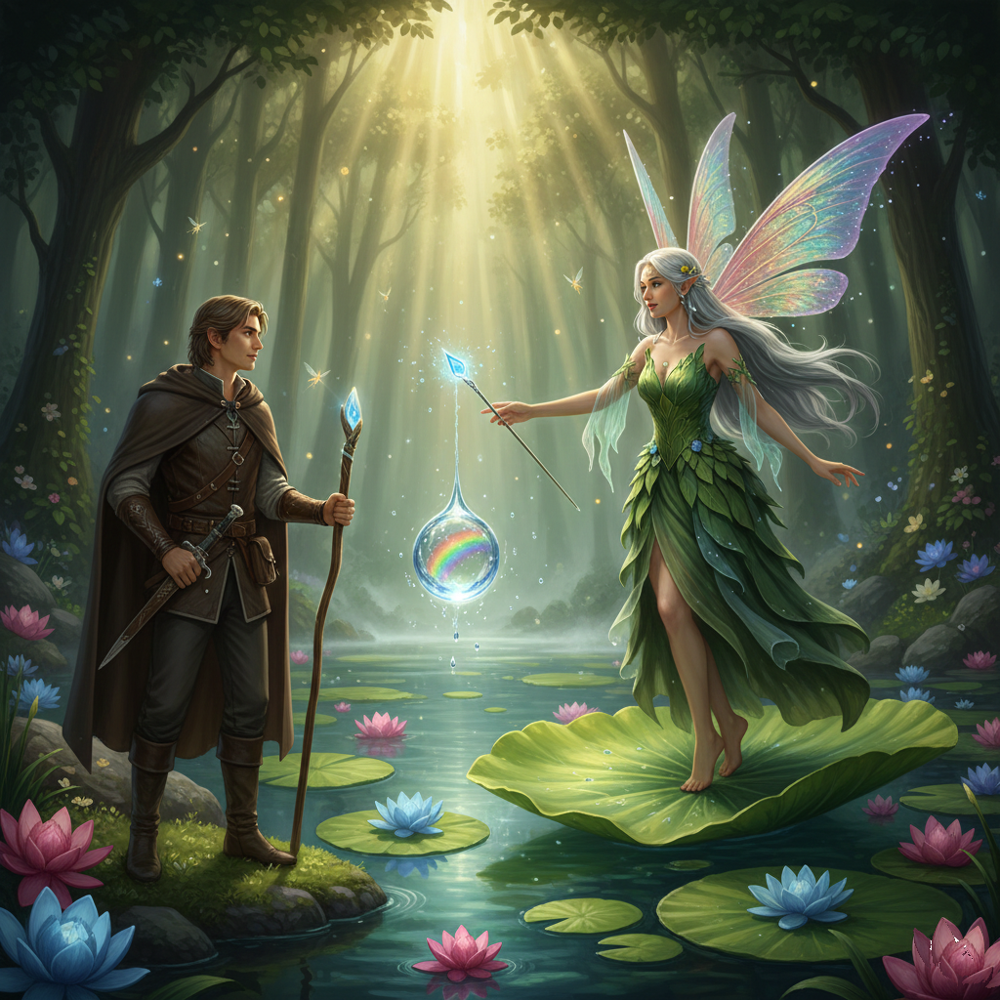
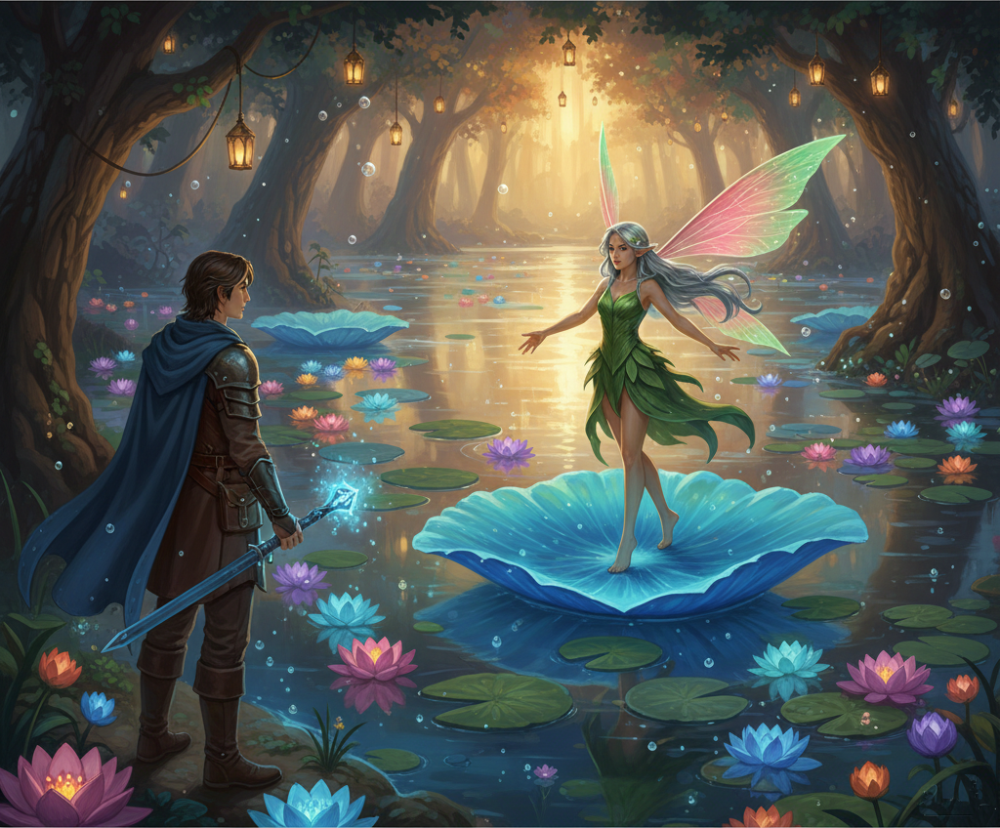
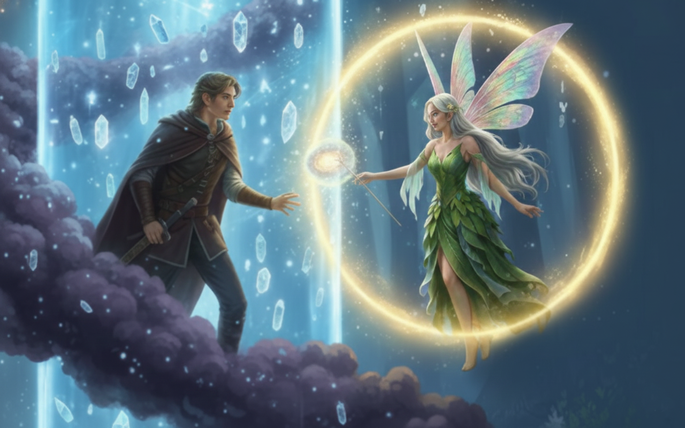
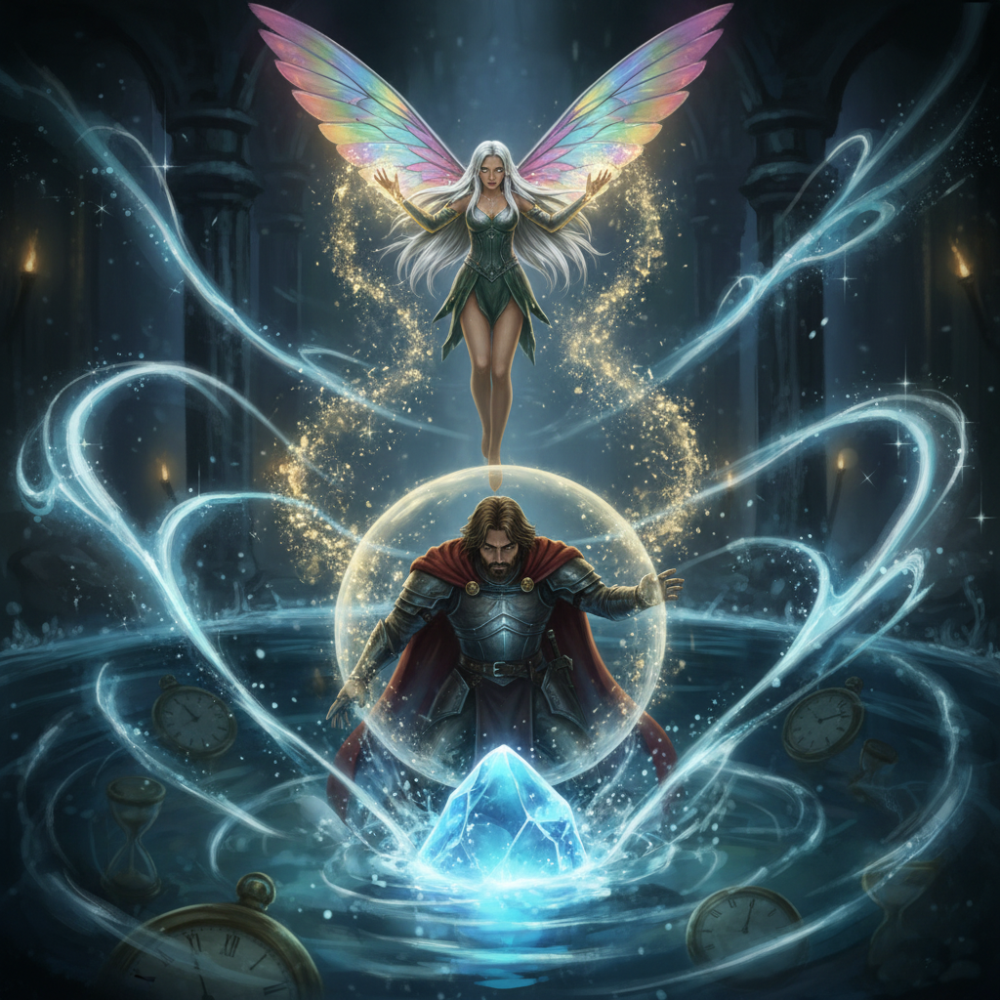
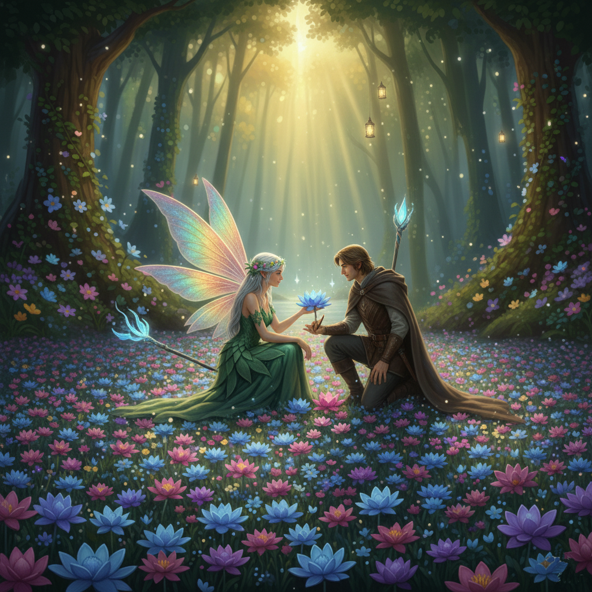

Honóra és az Időtlen Pillanat
Ajánlom egy kedves barátomnak, aki keresi a pillanatban rejlő örökkévalóságot, és mer hinni a szív órájának szavában.
Első Fejezet: Honóra és a Szivárvány-tó

Egyszer volt, hol nem volt, az üveghegyen innen, a zöldellő Erdőszív mélyén, ott, ahol a legtisztább források fakadnak, élt egy gyönyörű, bölcs tündér, akit Honórának hívtak. Neve, Honóra, nem csupán szépségét és nemességét tükrözte, hanem utalt a vele született különleges képességére is: ő volt az Idő Tündére, aki képes volt egy pillanatra megállítani, vagy éppen felgyorsítani a múló perceket – különösen, ha a Természet órájáról volt szó. Hosszú, ezüstös haja a harmatos fűre omlott, szemei csillogtak, mint a legfényesebb csillagok, és szívében a legmélyebb tisztelet élt a természet minden teremtménye iránt. Honóra volt a Szivárvány-tó őrzője, egy csillogó, kristálytiszta vizű ékszer, amelynek mélyén aranyhalak úszkáltak, partján pedig olyan virágok illatoztak, melyekről az emberek csak álmodtak.
Honóra azonban nem mindig volt ilyen komoly és bölcs. Gyermekkorában, mint minden ifjú tündér, ő is pajkos és kíváncsi volt. Akkoriban a neve még csak "Hon" volt, és gyakran játszott az idővel, megállítva a szitakötőket a levegőben, vagy lelassítva egy lehulló falevél útját, csak hogy alaposabban megfigyelhesse. Egy ilyen játék során, amikor épp megállította az időt, hogy egy különleges virágot megcsodálhasson, rálelt egy titkos ösvényre, ami a Szivárvány-tóhoz vezette. Ekkor fedezte fel az idős, bölcs tavirózsa-tündér, Nimfa, aki később tanítója és névadója lett, megtoldva nevét az "óra" szóval, utalva képességére és a természet rendjéhez való elkötelezettségére. Azóta Honóra tisztelettel bánik az idővel, és csak akkor avatkozik be, ha feltétlenül szükséges.
Egy napsütéses reggelen Honóra észrevette, hogy egy apró, különleges mag lebegett a tó felszínén. Tudta, hogy ez nem akármilyen mag: egy varázslatos tündérrózsa rejtőzött benne, amely különleges erejével minden nap pontosan megduplázta a méretét! Ez a tündérrózsa a tó szívének lüktetésével élt, és növekedése a Szivárvány-tó erejét mutatta.
Honóra boldogan nézte, ahogy az apró rügy először egy tenyérnyi levéllé bontakozik, majd másnap már két tenyérnyivé válik. Ez a tündérrózsa nemcsak a tó dísze volt, hanem egyfajta élő óra is, mely Honóra számára a természet lassú, mégis megállíthatatlan erejét mutatta. Még ő sem avatkozott bele ennek a varázslatos növénynek a növekedésébe, mert tudta, hogy a természet rendje szent.
Ahogy teltek a napok, a tündérrózsa egyre nagyobb lett. Honóra minden reggel körbesétálta a tavat, és ámulva figyelte a varázslatot. Eltelt huszonöt nap, majd huszonhat, huszonhét... a tündérrózsa hatalmasra nőtt, elborítva a tó egyre nagyobb részét. Honóra a színes szirmok és a zöld levelek labirintusában gyönyörködött.
Tudta, hogy a varázslat szerint a tündérrózsa pontosan 30 nap alatt fogja beborítani a tó teljes felszínét, és akkor a vízfelszín már alig látszik majd a zöld és fehér szirmoktól. Honóra elmosolyodott, amikor eszébe jutott a kihívás, amit ez a növekedés rejt, és ahogy az idő múlása minden nap újabb és újabb csodát mutat.
És most jön a kérdés, amit Honóra tündér néha feltett magának, miközben a tó partján ült, és a pillangókat nézte, és azon gondolkodott, hogyan is értette meg ő maga is ezt a rejtélyt gyermekkorában.
Második Fejezet: Az erdő vándora
A Szivárvány-tó partján aznap szokatlanul nagy volt a csend. Még a tücskök is elhallgattak, amikor a sűrű bozótosból egy idegen lépett elő. Nem tündér volt, de nem is közönséges ember: egy sudár termetű, barna köpenyes tündérlovag állt meg a vízparton, akinek az övén egy ezüstmarkolatú tőr csillogott. A neve Alerion volt, a Távoli Sziklák küldötte.
Alerion megállt és körülnézett. A tó közepén, egy hatalmas, úszó levélen pillantotta meg Honórát. A tündér éppen egy vízcseppet egyensúlyozott az ujja hegyén, miközben az időt lassította körülötte, hogy a cseppben tükröződő szivárvány minden színét megfigyelhesse.
– Úgy hallottam a vándorló szelektől, hogy ezen a vidéken él a világ legcsodálatosabb tündére, akinek hatalma van a percek felett – szólalt meg Alerion mély, zengő hangon.
Honóra elengedte a vízcseppet, ami selymesen csobbant a tóba, és lassan a férfi felé fordult. – A szelek gyakran túloznak, vándor – felelte Honóra egy halvány mosollyal. – De az igaz, hogy a Szivárvány-tó partján az idő másképp telik, mint máshol. Mi járatban vagy itt, ahol csak a nyugalom az úr?
Alerion közelebb lépett a vízhez, de tiszteletteljes távolságban maradt. – Nem aranyat vagy drágaköveket keresek – mondta a lovag, és a szemei őszintén csillogtak. – Messzi földről jöttem, mert a népem körében egy régi legenda kering egy tündérről, akinek a neve Hon-óra. Azt mondják, gyerekkorodban egyszer megállítottad az időt, hogy megments egy kismadarat a zuhanástól. Csak látni akartalak. Valóban képes vagy megállítani a világot, ha akarod?
Honóra elgondolkozott. Eszébe jutott a gyermekkora, amikor még nem tudta, hogy az időt nem uralni, hanem tisztelni kell. – Az idő olyan, mint ez a tó, Alerion – mutatott a vízre. – Megállíthatom a hullámzását egy pillanatra, de a mélyben a mozgás sosem szűnik meg. A nevem, a Hon-óra, nem a hatalmamról szól, hanem arról a pillanatról, amikor rájöttem: minden óra egy otthon, amit meg kell becsülnünk.
Alerion elmosolyodott. – Bölcsebb vagy, mint ahogy a dalok mondják. De mondd csak, tündérlány, ha megállítanád most nekem az időt, vajon ez a pillanat örökké tartana?
– Semmi sem tart örökké, lovag – válaszolta Honóra, miközben kecsesen a part felé lebegett. – De ha jól figyelsz, egyetlen percben is benne lehet egy egész életnyi varázslat.
Alerion nem tágított, kíváncsian nézett a tündérre: – Taníts meg rá! Mutasd meg, hogyan látod te a világot, ahol nem sietnek a percek.
Harmadik Fejezet: Az Idő Örökkévaló Ölelése
Alerion tekintetében várakozás csillogott, ahogy Honóra elébe lebegett, egy hatalmas tündérrózsa levelén, mely lágyan ringatózott a vízen. A nap sugarai átszűrődtek az erdő lombkoronáján, aranyhidat festve kettejük közé. Honóra felemelte a kezét, és egy parányi fénylő gömb jelent meg a tenyerén, melyben az idő múlása – a pillanatok örök áramlása – tűnt fel apró, szikrázó részecskékként.
– Az időt nem lehet megtanulni, Alerion – suttogta Honóra, hangja lágyabb volt, mint a szél sóhaja. – De megérteni, azt igen. Érezni a lélegzetét, a ritmusát, ahogy minden egyes múló pillanatban egy egész örökkévalóság rejtőzik.
Alerion elmélyült. Szeme Honóra tenyerén nyugvó fénygömbön mozgott. – Én csak a múló napokat és éjszakákat ismerem, a hajnalt, amely az alkonyba siet – mondta. – A távoli Sziklák népe a tettek embere, a valóságot keressük, a megfoghatót. De te... te valami mélyebbet látsz.
Honóra lassan a tóra mutatott, ahol a tündérrózsa egyre nagyobb területet borított be, de a víz felszíne alatt a mélység változatlan maradt. – A valóság sok rétegű, lovag. Ahogy a tündérrózsa is minden nap duplázódik, úgy rejtenek az élet pillanatai is rejtett dimenziókat. Amikor gyerekként megállítottam az időt, azt hittem, uralom. Ma már tudom, hogy csak köszöntöttem. Hívom, hogy megmutassa nekem az arcát. Te is képes vagy erre.
Alerion közelebb lépett a part széléhez, szinte hipnotizálva Honóra szavaitól és a fénygömb táncától. – Hogyan? Hiszen nincsenek szárnyaim, sem a te képességeid. Hogyan láthatnék túl a földi perceken?
Honóra tekintete a férfi szemébe fúródott, és abban a pillanatban Alerion úgy érezte, mintha egy évezredek óta elfeledett emléket hozna fel a mélyből. – Lásd a múlást nem végként, hanem kezdetként. Érezd a pillanat súlytalanságát, mint egy lebegő falevelet. Amikor a szívedben megszűnik a sietség, amikor nem az eltelő órákat számolod, hanem a jelen pillanatának teljességét öleled, akkor találkozol az idő valódi arcával. Akkor egyetlen „Hon-óra” is örökkévalóság lehet.
A fénylő gömb Honóra tenyerén elhalványult, és a tündér felemelte a kezét Alerion felé. – Gyere közelebb. Engedd, hogy megmutassam.
Alerion habozott egy pillanatig, majd lassan előre nyújtotta a kezét, hogy megérintse Honóra ujjait. Abban a pillanatban, ahogy bőrük találkozott, a tó körüli levegő megremegni látszott. A fák levelei megálltak a szélben, a madárdal elcsendesedett, és a napfény mozdulatlanná dermedt az égen. Alerion nem érezte az időt múlni, csak Honóra tekintetét, amelyben az egész univerzum tükröződött. Nem szerelem volt ez a földi értelemben, hanem egy mélyebb, lélekemelő felismerés, mely összekötötte őket az időtlen térben. Egy pillanatra ők maguk váltak az idővé, a jelen örökkévaló ölelésévé.
Negyedik Fejezet: Az Elveszett Pillanatok Kútja
Ahogy Honóra és Alerion keze összeért, a mozdulatlan csendet hirtelen egy mély, tompa morajlás törte meg. A Szivárvány-tó tükre fodrozódni kezdett, és a varázslatos tündérrózsák színe halványulni látszott. Honóra arca elkomolyodott.
– Érzed ezt, Alerion? – kérdezte suttogva. – Az Idő Forrása, ami a tó mélyén rejlik, zavarossá vált. Valahol messze, az Árnyékhegyek lábánál megállt egy kerék, amely az univerzum perceit hajtja. Ha nem indítjuk újra, a tündérrózsa varázsa elvész, és a tó örökre álomba merül.
Alerion nem habozott. Kezét a tőrére tette, de Honóra lágyan megrázta a fejét. – Ide nem fegyver kell, hanem bátorság és az a látásmód, amit az imént kezdtél megérteni. El kell jutnunk az Elveszett Pillanatok Kútjához. Ez egy olyan hely, ahol az idő nem folyik, hanem örvénylik. Ott őrzik az Idő Kristályát, amely kiesett a helyéről.
A lovag bólintott. – Veled megyek. Mutasd az utat, tündérlány!
A küldetésük során át kellett vágniuk az Emlékek Erdején, ahol a fák nem leveleket, hanem elfeledett suttogásokat hullattak. Itt Alerionnak meg kellett tanulnia, hogyan ne vesszen el a múltja képeiben, Honórának pedig meg kellett tartania az idő kordonát, hogy ne ragadjanak bent egyetlen pillanatban sem.
Végül megérkeztek a Kúthoz, ami nem a földben, hanem a levegőben lebegett. Egy hatalmas, átlátszó vízoszlop volt, amelyben apró fények – az emberek és tündérek legszebb pillanatai – táncoltak. A kút alján hevert az Idő Kristálya, de egy sűrű, fekete köd vette körül: a Felejtés Homálya.
– Alerion, te vagy a tettek embere – mondta Honóra. – Neked kell a homályba nyúlnod a kristályért. Én addig megállítom körülötted a sötétséget, hogy ne tudjon rád telepedni. De vigyázz! Amint megérinted, az összes elszalasztott lehetőséged súlya a válladra nehezedik. Ne engedd, hogy a "mi lett volna, ha..." érzése visszahúzzon!
Alerion mély levegőt vett. Ahogy a Kútba lépett, Honóra felemelte mindkét kezét, és egy arany fénypajzsot vont a lovag köré. Az idő körülöttük vibrálni kezdett. Alerion érezte a hideg sötétséget, hallotta a hangokat, amik a kudarcairól suttogtak, de ekkor Honóra hangja csendült fel a fejében: "Emlékezz a Hon-órára! Minden pillanat egy otthon. Ne a múltban élj, hanem ebben a szent percben!"
Alerion keze rázárult a hideg kristályra. Egy hatalmas fényrobbanás rázta meg a teret, és a fekete köd azonnal eloszlott. A kristály újra a helyére került a kút tetején, és az idő kereke halkan, ütemesen újra forogni kezdett.
Amikor visszatértek a Szivárvány-tó partjára, a tündérrózsák élénkebben ragyogtak, mint valaha. A küldetés sikerült, de valami megváltozott. Alerion már nem csak egy lovag volt, aki a szépséget kereste, és Honóra sem csak a tó magányos őrzője.
Ötödik Fejezet: Az Időtlen Pillanat
A küldetés után Honóra és Alerion a Szivárvány-tó partján álltak. A tó felszínét szinte teljesen beborították a tündérrózsák – már csak egy aprócska kék folt csillant meg a távoli szélen.
– Eljött a harmincadik nap alkonya – suttogta Honóra. – A varázslat beteljesedett, a tó megtelt élettel. De te, Alerion... a te időd a Sziklák népe között vár. A tündérek és a lovagok útja ritkán fonódik össze örökre.
Alerion a tündér szemébe nézett. Nem volt benne szomorúság, csak az a mély nyugalom, amit Honórától tanult. – Azt mondtad, minden óra egy otthon. Én itt, melletted leltem otthonra, akkor is, ha a földi órák mást mutatnak.
Honóra ekkor valami különöset vett észre. Bár a kristályt helyretették, a tündérrózsák növekedése nem állt meg a tó szélénél. A virágok elkezdték belepni a partot is, de nem térben, hanem... időben.
– Alerion! – kiáltott fel Honóra. – Nézd! Amikor a Kútnál megérintetted a kristályt, a te emberi energiád és az én tündéri erőm összekapcsolódott. Nemcsak az időt indítottuk el, hanem létrehoztunk egy Időhurok-szigetet.
Ez volt a sorsuk titka: A Szivárvány-tó ezentúl egy olyan különleges hely maradt, ahol az idő nem egyenes vonalban halad, hanem körbe-körbe, mint egy végtelen tánc. Alerionnak nem kellett elmennie, mert a tó partján állva egyszerre volt a múltban, a jelenben és a jövőben.
– Úgy érted – kérdezte Alerion –, hogy számunkra ez a harmincadik nap sosem ér véget? – Úgy – felelte Honóra. – De nem azért, mert megállítottuk, hanem mert minden reggel újra felfedezzük egymást. A közös jövőnk nem egy távoli cél, hanem maga a Jelen.

Honóra és Alerion ezentúl együtt vigyáztak a tóra. A lovag megtanulta a tündérektől a türelmet, Honóra pedig Aleriontól azt, hogy néha a legszebb pillanatokat nem megőrizni, hanem megélni kell. Kapcsolatuk természetfeletti maradt: két lélek, akik egy olyan "Hon-órát" hoztak létre, ahol a szeretet nem az évek számától függ, hanem a pillanat mélységétől.